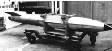
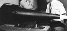
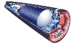
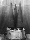
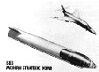
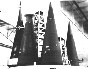

U.S. Nuclear Weapon Enduring Stockpile
Last changed 31 August 2007
The U.S. nuclear arsenal is divided into three levels of stockpile readiness. These are:
- Operationally Deployed: These are active stockpile (fully operational) weapons and mated with delivery systems such that they are ready to be used in combat. All warheads counted under arms limitation agreements belong to this category.
- Active Stockpile: Fully operational weapons, available for immediate use, whether or not they are operationally deployed. Reasons for an active stockpile weapon to not be operationally deployed include:
- Its assigned to a delivery system is not currently operational (in particular ballistic missile submarines spend one-third of their time not on patrol),
- It is a spare for deployed warheads (should a deployed warhead require maintenance, for example), and
- It is part of the responsive force -- an inventory of warheads that are kept in operational condition (tritium reservoirs installed, etc.) to permit immediate deployment (for example to upload the number of wartheads on a ballistic missile, or reloads for bomber aircraft).
- Inactive Reserve: Weapons that are kept intact, but are not maintained in operational condition. This means that limited life components are removed from the weapons and may not be available to immediately return them to service. "Limited life components" principally mean tritium-containing components such as tritium reservoirs and neutron generator tubes. Some weapons currently in this category (e.g. the W84) will be dismantled.
At the beginning of 2007 the U.S. nuclear arsenal was composed of eight types of nuclear warheads (in thirteen variant mods) that are operationally deployed, with an estiamted count of 5,736 active stockpile warheads. For the first time the 2007 Annual Report on Implementation of the Moscow Treaty listed the aggregate number of U.S. operationally deployed strategic nuclear warheads which as of 31 December 2006 stood at 3,696. No official breakdown of this number is available, however if one assumes that ICBMs have 95% availability, 66% of SLBMs are on patrol, and 90% of bombers are on-duty with their full combat load, then this tally exactly matches the offical operational count.
One of the active warheads (the W87) is currently being redeployed (replacing the W62) after having been taken off of operational duty in the 1990s.
There are also 589 warheads of two types that are inactive, these are not kept in operational condition and one of these warheads (the W84) is slated to be completely dismantled.
The total number of warheads of all levels of readiness stands at 9,962 warheads. It should be pointed out that although precise numbers are cited here to keep tallies consistent and avoid cumulative rounding errors, they are in fact approximations. Even if exact numbers were available for one specific moment in time, continuing stockpile changes as a result of deployment shifts and inspection and maintenance actions causes actual numbers to fluctuate.
The total megatonnage of the deployed nuclear arsenal is about 1,430 Mt (but this is influenced by the choice of deployed weapons for bombers); for the entire active arsenal it is 2,330 Mt. The all-time high point in explosive yield was in 1960 when the U.S. held 20,491 Mt in its stockpile. The size of nuclear arsenals are often evaluated using "equivalent megatonnage" a scaling procedure that compensates for the fact that smaller explosions cause relatively more blast destructive for the amount of explosive energy released. An EMt value of one indicates the destructive effect of one 1 megaton bomb. Since most warheads in the U.S. arsenal are much less than one megaton this measure results in a larger value than the raw megatonnage. Using this measure the destructiveness of the deployed arsenal becomes 2,090 EMt, and the total active arsenal 3,405 EMt.
The United States has produced about 70,000 nuclear weapons of 72 major types since their invention. At the end of the Cold War in 1991 the United States had an active arsenal of some 23,000 weapons of 26 major types. Since that time actual nuclear warhead production has been completely shut down in the U.S., although warhead modification, retrofit, and maintenance activities continue. Much of the original nuclear weapons manufacturing infrastructure has been dismantled, and the focus of the remaining nuclear infrastructure has shifted to maintaining and extending the life of the remaining weapons, as well as dismantling surplus weapons.
The only strategic arms treaties still in force between the U.S. and the Russian Federation is the Moscow Treaty on Strategic Offensive Reductions (also called "the Moscow Treaty," the Strategic Offensive Reductions Treaty, or SORT) and the START I treaty, which will expire in December 2009. The Moscow Treaty was signed by Presidents George W. Bush and Vladimir Putin on 24 May 2002 and ratified by the U.S. Senate on 6 March 2003, and by the Russian Duma on 14 May 2003. The Moscow Treaty sets lower warhead limits than the effective limits of START I and requires both sides to reduce their deployed strategic nuclear warheads to between 1,700 and 2,200 warheads by midnight 31 December 2012. Strangely, the deadline for compliance is the same moment as the expiration of the treaty so it is questionable whether the warhead limit ever legally takes effect.
The Moscow Treaty does not require the destruction of any of the warheads taken out of deployment. Given the lengthy period the Moscow Treaty gives for reductions (more than a decade) and the debatable effect of its limit, the actual effect it will have on U.S. and Russian arsenals remains to be seen. U.S plans appear to take into account reduction to the SORT upper limit of 2,200 however.
Current plans are to completely retire and dismantle the oldest warhead in the U.S. arsenal, the W62 carried by the Minuteman III missile. Retirement of the W62 began in October 2006, and is being replaced by W87 warheads that have been in storage since they were removed from Peacekeeper (MX) missile upon its retirement. Five other deployed warheads (the B61-3, B61-4, W76, W78 and W80-1) will be reduced in number to bring the count down to 2,200. This will required removing 3,759 of these five warheads from deployment (given that 553 W87s are being returned to duty); together they number 4,302 of the currently deployed force. Partial dismantlement of these warheads is expected, but former Secretary of Defense Donald Rumsfeld has indicated that most the warheads removed from deployment will be kept in the U.S. stockpile.
Actual production of new warheads halted in 1989. In January 1997, the first new weapon modification since the production shutdown entered service - the B61 Mod 11 (B61-11) ground penetrating ("bunker busting") bomb. This was a modification of B61 Mod 7s that were already in the stockpile. Remanufacture and updating of subsystems of existing weapons is on-going as part of a stockpile Life-Extension Program (LEP).
In the FY2005 budget congress authorized $36.6 million for two new nuclear weapons programs - the Robust Nuclear Earth Penetrator (RNEP), and the Advanced Concepts Initiative (ACI). The RNEP was intended to explore the design of a new "bunker busting" warhead, while the ACI explored other weapons concepts. Poor reviews of the RNEP concept led to the deletion of funding from the FY2006 budget. The ACI on the other hand was replaced by the Reliable Replacement Warhead (RRW) program, to which its funds were transferred. The National Nuclear Security Administration (NNSA) requested funding of $9.351 million for RRW in the FY2006 budget.
According to the NNSA budget request the RRW:
"Is to demonstrate the feasibility of developing reliable replacement components that are producible and certifiable for the existing stockpile. The initial focus will be to provide cost and schedule efficient replacement pits that can be certified without underground tests.
This program justification is similar to the pre-existing stockpile LEP which also develops reliable replacement components, though not for warhead pits (the hollow plutonium core found in each warhead) or other non-replaceable "physics package" (nuclear explosive) components. A key motivation for interest in replacement pits is long standing concern about how long pits manufactured decades ago would remain reliable against corrosion and other forms of deterioration. In general the original formulation of RRW seems to have been a more thorough going and ambitious version of LEP. The latter program was conservative - it attempted to minimize changes to the warhead - while RRW sought to remanufacture the entire weapon.
In November 2006 the JASONs, a select panel of scientific advisors, issued a report reviewing seven years of research on plutonium pit deterioration and found that they would remain reliable for up to 100 years. This finding seemingly undercut the NNSAs FY2006 budget justification for the RRW program.
On 7 January 2007 The New York Times reported that the interagency Nuclear Weapons Council would announce the following week a major decision for RRW. The two nuclear weapon labs, it was revealed, had developed competing proposals for RRW - neither of which was in the mold of "LEP-plus". Instead both labs proposed replacing the entire existing arsenal of warheads with new designs. The Los Alamos National Laboratory (LANL) proposal drew on aspects of many weapons from the stockpile and pulled them together in a novel design that has never undergone testing. he Livermore National Laboratory in California, approached the problem with very different philosophies, nuclear officials and experts said. The Lawrence Livermore National Laboratory (LLNL) proposal was based on a robust warhead design that had been tested in the 1980s, prior to the nuclear testing moratorium. This weapon (which might possibly be either the CALMENDRO or MUNSTER warhead designs previously considered for deployment in the 1980s) has never entered the nation’s nuclear stockpile.
Reportedly the new decision on RRW however would not select between the two proposals, but would instead combine them, yielding yet another novel warhead.
The tables below give a summary breakdown of the U.S. stockpile. Clicking on the last column of the table will bring up a detailed description of the correspondng weapon.
United States Nuclear Weapon Stockpile
| Designation |
Warhead Type |
Yield (Kilotons) |
Active
Stockpile |
Inactive |
Total |
First Produced |
Click For More Info |
B61
Mod-3
Mod-4
Mod-7
Mod-10
Mod-11
|
Bomb
Tactical
Tactical
Tactical
Strategic
Tactical/Strategic
|
0.3 / 1.5 / 60 / 170
0.3 / 1.5 / 10 / 45
10 / ? / 340
0.3 / 5 / 10 / 80
0.3? / ? / 340
|
200
200
215
0
20 |
186
204
224
206
21 |
386
404
439
206
41 |
10/1979*
8/1979*
9/1985
1990
1/1997 |
 |
| W62/Mk-12 |
Ballistic Missile
Warhead/RV |
170 |
330 |
250 |
580 |
3/1970
Start of retirement 10/2006, completion in 2009
To be dismantled |
 |
| W76/Mk-4 |
Ballistic Missile
Warhead/RV
|
100 |
1712 |
1318 |
3030 |
6/1978* |
 |
| W76-1/Mk-4A |
Ballistic Missile
Warhead/RV
|
100 |
0 |
0 |
0 |
Life extension mod; first delivery 9/2007 |
|
| W78/Mk-12a |
Ballistic Missile
Warhead/RV |
335 |
785 |
20 |
805 |
8/1979* |
 |
W80
Mod 0
Mod 1
Mod 2
Mod 3
|
Cruise Missile Warhead
Sea Launched
Air Launched
Sea Launched
Air Launched
|
5 / 150 |
100
1450
0
0 |
194
361
0
0 |
294
1811
0
0 |
12/1981
12/1981*
Life extension mod: 2006
Life extension mod: 2008
|
 |
| B83-0/B83-1 |
Bomb-Strategic |
low to 1200 |
320 |
306 |
626 |
6/1983 |
 |
W84 |
Cruise Missile Warhead |
0.3 / ? / 150 |
0 |
383 |
383 |
6/1983
to be dismantled |
 |
| W87/Mk-21 |
Ballistic Missile
Warhead/RV |
300 |
10 |
543 |
553 |
4/1986
Began replacing W62 10/2006
Current deployment rate one per week
330 to be deployed by 2009 |
 |
| W88/Mk-5 |
Ballistic Missile
Warhead/RV |
475 |
404 |
0 |
404 |
9/1988 |
No Graphic Available |
* To be partly dismantled as part of Moscow Treaty arsenal reduction.
Principal Sources:
Chuck Hansen. Swords of Armageddon 1996, VI-439 to VI-442.
Chuck Hansen. U.S. Nuclear Weapons: The Secret History 1988
Thomas B. Cochran, William M. Arkin, and Milton M. Hoenig. Nuclear Weapons Databook: U.S. Nuclear Forces and Capabilities 1984
Robert S. Norris and Hans M. Kristensen. The Bulletin of the Atomic Scientists, Vol. 59, No. 1 (Jan./Feb. 2003), p. 74-76.
The B61 Family of Bombs, Robert S. Norris, Hans M. Kristensen, Joshua Handler in The Bulletin of the Atomic Scientists, Vol. 62, No. 1 (Jan./Feb. 2006), p. 68-71.
James N. Gibson. Nuclear Weapons of the United States 1996.
Jonathan Medalia. Nuclear Weapons: The Reliable
Replacement Warhead Program, CRS-RL32929, Congressional Research Service, The Library of Congress, 9 March 2006.